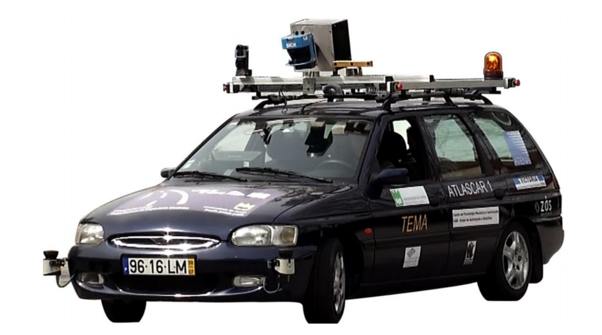

ATLAS
ATLAS Project
The ATLAS project has vast experience with autonomous navigation in controlled environments, this is especially shown in projects such as the ATLASCAR1 which was a full sized prototype equipped with several state of the art sensors(LARlabs 2018). Currently, the ATLAS project is now evolving to deal with real road scenarios with the ATLASCAR2 project which is the new full sized prototype being used for research purposes equipped with LIDAR sensors and a Point Grey Camera.
The ATLAS project was created in 2003 and it started with robot prototypes that were later developed to participate at AD competitions taking place at the Portuguese National Robotics Festival. From this project. three small-sized platform robots were built, which were very successfull having won some prizes in other robotics competitions.
As time goes on, the project grew evolving into full-sized prototypes: the ATLASCARs, ATLASCAR1 which is the first full-sized platform and it is based on a Ford Escort Station Wagon, and the ATLASCAR2 which is a full-sized platform and it is based on a Mitsubishi i-MiEV.
Prototype robots of the ATLAS project for the 2003 Portuguese National Robotics Festival
The ATLASCAR is one of the projects developed from the ATLAS project, which is a project developed by the Group of Automation and Robotics at the Department of Mechanical Engineering of the University of Aveiro, Portugal. The focus of the ATLAS project was to develop and enable the proliferation of advanced sensing and active systems designed for implementation in automobiles and affine platforms. These advanced active systems keep on being improved, or newly developed, using the data acquired from vision, laser and other sensors.
ATLASCAR
On this section we give an insight into each and every one of the ATLASCAR projects, explaining its main function and their external components.
ATLASCAR1

The ATLASCAR1 was equipped with several LIDAR sensors as well as several cameras. The data acquired about its enviornment was gathered by the scanners present in the car which would then process building perception into the car allowing it to move and perform task autonomously, like moving and executing maneuvers in small and controlled places. In the end, the ATLASCAR1 brought some very interesting and succesfull results which were then adapted to the new full-sized platform of the ATLAS project which is the ATLASCAR2, which was the vehicle used for research in this dissertation.
ATLASCAR2
The ATLASCAR2 is equipped with various state of the art LIDAR sensors and Point Gray Camera, and it is also a full electric vehicle, unlike the ATLASCAR1, which means it is easier to modify, test and control unlike the previous version.


The ATLASCAR2 is based in the platform of the 2015 Mitsubishi i-MiEV, a full electric vehicle. The battery that powers the engine is the same powering the camera and the sensors. The main characteristics of the car can be seen in the following table:
The sensors and the camera used by the ATLASCAR2 can be seen down below.
LIDAR Sensors
The sensors equipped in the ATLASCAR 2 are two SICK LMS151 LIDAR, a SICK LD-MRS LIDAR and a PointGrey Zebra 2 Camera. The sensors have been mounted in the front of the car in an aluminum infrastructure designed by Correia 2017. These devices are connected to a network switch installed in the car to which a computer can be plugged to receive the data from the sensors.
SICK LMS151
The SICK LMS151 is a LIDAR sensor designed to be used outdoors. It is a planar infrared scanner with a large planar aperture angle often used in robotics and in AD fields for its high scanning frequency and operating range. This scanner is also able to scan distances through fog, glass and dust (multi-echo technology). This scanner is provided with an Ethernet TCP/IP interface with high data transmission rate (SICK 2018b).
The specifications of this sensor can be seen down below

SICK LD-MRS
The SICK LD-MRS is a LIDAR sensor also designed to be used in outdoors.It features 4 planar infrared scanners with 0.8 ◦ vertical aperture angle between each plan, offering tri-dimensional point clouds. It provides high scanning frequencies and long operating range up to 300 meters. This scanner is also provided with an Ethernet TCP/IP interface with high data transmission rate (SICK 2018a).
The specifications of this sensor can be seen down below
PointGrey Zebra 2 Camera
The PointGrey Zebra 2 Camera is a high resolution camera with a Sony ICX274. It also features a GigE PoE Interface and it is highly configurable to fulfill any particular utilization needs (PointGrey 2018). The camera is inserted in a case made with 3D printing and designed by Correia 2017.
The specifications of this camera can be seen down below